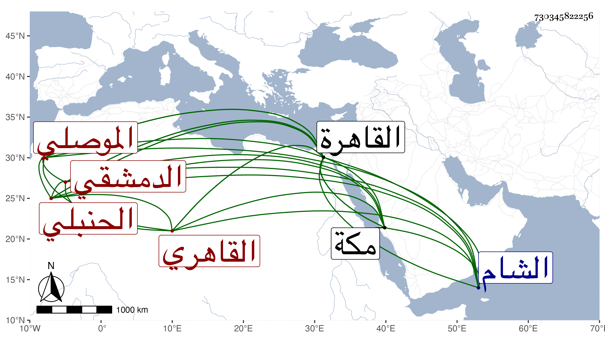

0902Sakhawi.DawLamic.ITO20230111-ara1.EIS1600.730345822256
Biography ID: 730345822256
135
محمد بن أحمد بن محمد بن عبد القادر بن حسن بن محمد المحب أبو الفضل الموصلي ثم الدمشقي الأصل القاهري الحنبلي ويعرف بابن جناق بضم الجيم وكان يزعم عن شيخنا أن الفتح أصوب ثم نون خفيفة وآخره قاف . ولد في ليلة النصف من شعبان سنة سبع وثلاثين وثمانمائة بالقاهرة ورام أهله أن يكون عقادا فأقام عند بعض أربابها يسيرا ثم تحول وحفظ بعض القرآن وجميع العمدة وكان يقول أنه حفظها في أربعين يوما وأنه عرضها على جماعة منهم شيخنا وأجاز له فالله أعلم ، وانتقل إلى الشام في صفر سنة ثلاث وخمسين فأقام بها سنة وأشهرا وأكمل بها حفظ القرآن عند الفقيه عمر اللولوي الحنبلي قال وكنت أقرأ كل يوم منه ربع حزب بداية وانتفعت بملازمته وحضني على التحنبل فحضرت دروس البرهان بن مفلح وكذا التقي بن قندس ولزمته حتى سمعت عليه بحث المقنع والمحرر والخرقي إلا يسيرا منه وأنه قرأ في الحساب على الشمس السيلي الحنبلي ، ثم عاد إلى القاهرة في آخر سنة أربع وخمسين فحفظ بها كما زعم أيضا التسهيل في الفقه لابن البلاسلار البعلي والهداية في علوم الحديث لابن الجزري وبحث فيها على الزين قاسم الحنفي وأخذ الفقه يسيرا عن ابن الرزاز المتبولي والعز الكناني ولازمه واشتغل بغيره يسيرا فحضر دروسا في العربية عن التقيين الشمني والحصني وفي الأصول عند ابن الهائم والجلال المحلي وأبي لفضل المغربي وقرأ على السيد على الفرضي الفصول في الفرائض والنزهة في الحساب كلاهما لابن الهائم وجالس الشهاب الحجازي في الأدب وانتفع بيحيى الطشلاقي في بعض فنونه كثيرا وطلب الحديث وقتا ودار على متأخري الشيوخ فسمع جملة وكان يستمد مني في ذلك وفي غيره بل سمع منى في الإملاء وغيره ، وأجاز له غير واحد وكتب بخطه بعض الطباق ورام محاكاة ابن ناصر الدين في خطه كالخيضري ، وأذن له المرداوي والجراعي في التدريس والإفتاء بل كتب قاسم الحنفي تحت خطه في بعض الفتاوى وكذا أذن له العز الكناني حيث علم من نفسه التآهل لذلك وتنزل في صوفية الشيخونية وهي أول وظائفه ثم الأشرفية والبيبرسية وغيرها وولى الإعادة بالمنصورية والحاكم وبعد حفيد ابن الرزاز إفتاء دار العدل وتدريس الفقه بالقراسنقرية والمنكوتمرية وناب في القضاء عن شيخه العز وامتنع من التعاطي على الأحكام وأقرأ الطلبة وكذا أفتى خصوصا بعد وفاة النور الششيني ، وكان فاضلا ذاكرا مستحضرا ، لكثير من فروع المذهب ذائقا للأدب حريصا على التصميم في الأحكام وإظهار الصلابة وتحري العدل مع قوة نفس واقدام وإظهار تجمل مع التقلل واحتشام ولطف عشرة وتواضع وميل للماجنة مع من يختاره ، وقد حج وجاور بمكة بعض سنة وكتب عنه صاحبنا ابن فهد من نظمه يسيرا ولم يكن قاضيه يحمد أكثر أفعاله بل ينسبه إلى حمق وتصنع ولعدم اعتنائه بشأنه مسه بعض المكروه من العلم البلقيني بسبب خلوه بالمطلع الملاصق لا يوان الحنفية من الصلاحية النجمية اقتات في عمارتها من ماله وغيره بارتكاب مالا يجوز ولذلك لم يمتع بها بل مات عن قرب في عاشر شوال سنة اثنتين وسبعين وصلى عليه في مشهد حسن ودفن بحوش البغاددة تربة السلام بالقرب من ضريح المحب بن نصر الله أثنى الناس عليه جميلا وأظهر العز التأسف على فقده عوضه الله الجنة ومما أنشدنيه من نظمه :
| ووصل الذي أهواه من بعد بعده | وساقيه مع ساقي لما أن التووا |
| ووجنته مع ثغره وعذاره | وطرته مع مقلتيه وما حووا |
| وودى ولهفي لا سلوت ولو سلوا | فؤادي ولبي قد قلوا والحشاشووا |
